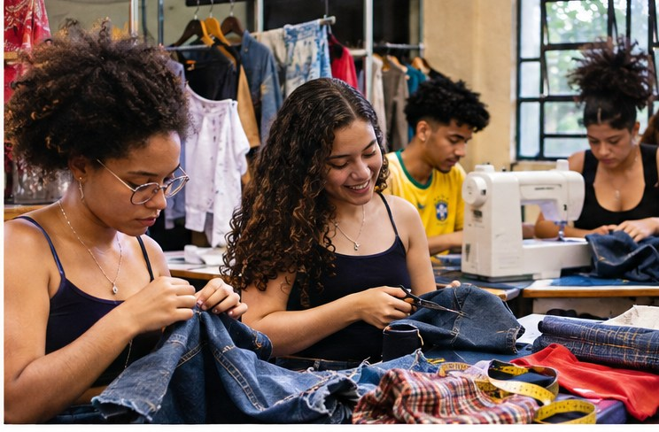

Comunicação e jornalismo
Comunicação e jornalismoInFoco
Um novo olhar sobre o mundo.
Explorar projeto ↗Conheça as quatro iniciativas culturais e educativas que estamos preparando para 2027.
Manifestar interesse Comunicação e jornalismo
Comunicação e jornalismoUm novo olhar sobre o mundo.
Explorar projeto ↗ Cultura, memória e identidade
Cultura, memória e identidadeConhecer nossas raízes é descobrir novos caminhos.
Explorar projeto ↗
Moda, criatividade e meio ambienteO futuro da moda não precisa começar do zero.
Explorar projeto ↗ Cinema, cultura e educação
Cinema, cultura e educaçãoO filme termina. A conversa continua.
Explorar projeto ↗Você pode escolher um ou mais projetos, mesmo sem matrícula no pré-vestibular. Haverá valores sociais ainda a definir, informados antes da confirmação.
Escolher meus projetosManifestação de interesse não garante vaga nem gera compromisso financeiro.